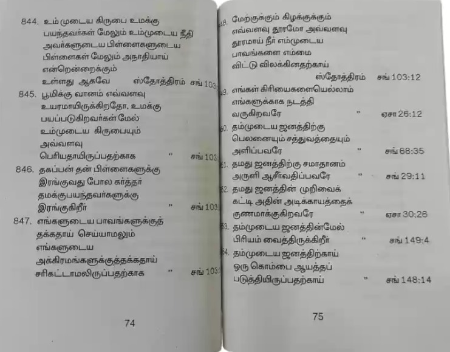

బైబిల్ అంటే ఏమిటి?
ఒక పెద్ద పుస్తకమా?
బైబిల్ గురించి మనం కనుగొన్న మొదటి విషయం ఏమిటంటే అది ఒక్క పుస్తకం కాదు, 66 పుస్తకాల సమాహారం! మేము వాటిని పుస్తకాలు అని పిలిచినప్పటికీ, బైబిల్ వాస్తవానికి కథలు, చరిత్రలు, కవిత్వం మరియు పాటలు, జీవిత చరిత్రలు మరియు అనేక లేఖలను కలిగి ఉంటుంది. (ఇది ఇ-మెయిల్కి ముందు, గుర్తుందా?)
ఇది అనేక రకాలైన రచనలను కలిగి ఉన్నందున, చాలా ఆధునిక పుస్తకాల వలె బైబిల్ సాధారణంగా కవర్ నుండి కవర్ వరకు చదవబడదు (అయితే ఇది ఖచ్చితంగా కావచ్చు). బదులుగా, విశ్వాసులు సాధారణంగా యేసు గురించిన కథలు లేదా దేవునికి వ్రాసిన స్తుతి పాటలు వంటి నిర్దిష్ట భాగాలను చదవడానికి బైబిల్కి వస్తారు.
కుడి వైపున ఉన్న చిత్రం బైబిల్ పుస్తకాలు వర్గాలుగా (లేదా శైలులు) ఎలా వర్గీకరించబడిందో చూపిస్తుంది.
బైబిల్ అనేక విభిన్న పుస్తకాలతో ఎందుకు రూపొందించబడిందో అర్థం చేసుకోవడానికి, బైబిల్ చరిత్ర గురించి మరియు అది ఎలా వ్రాయబడింది అనే దాని గురించి కొంచెం తెలుసుకోవడం సహాయపడుతుంది. దేవుడు సుమారు 3,000 సంవత్సరాల క్రితం మానవాళికి తన సందేశాలను వ్రాయడానికి ప్రజలను ప్రేరేపించడం ప్రారంభించాడు (ప్రారంభ తేదీలు కొద్దిగా అస్పష్టంగా ఉన్నాయి). సుమారు 1,600 సంవత్సరాల కాలంలో, చరిత్రలోని వివిధ కాలాల నుండి మరియు ప్రపంచవ్యాప్తంగా ఉన్న వివిధ ప్రాంతాల నుండి కనీసం నలభై మంది వేర్వేరు రచయితలు దేవుడు చెప్పడానికి ప్రేరేపించిన వాటిని రికార్డ్ చేశారు. ఇంకా, ఈ విభిన్న రచయితల సమూహం ఉన్నప్పటికీ, బైబిల్ ప్రాథమికంగా ఒకే కథను చెబుతుంది: ప్రపంచానికి దేవుని అంతిమ సందేశం అయిన యేసు వద్దకు ప్రజలను నడిపించే కథ.
బైబిల్ చాలా పెద్ద పుస్తకంలా అనిపించవచ్చు. బైబిల్ నిగూఢమైనది లేదా అర్థం చేసుకోవడం కష్టం అని కొందరు అనుకుంటారు లేదా వారు విన్నారు. పరిచారకులు లేదా పూజారులు మాత్రమే బైబిలును నిజంగా అర్థం చేసుకోగలరని కూడా వారికి చెప్పబడి ఉండవచ్చు.

అందుకే బైబిల్ నిజంగా ఏమిటో తెలుసుకోవడానికి ఇది సహాయపడుతుంది: ప్రతిచోటా ఉన్న ప్రజలందరికీ దేవుని సందేశం, సాధారణ ప్రజలు (అందరూ!) చదవడానికి ఉద్దేశించబడింది.

నిబంధన అంటే ఏమిటి?
"నిబంధన" అనే పదం మనల్ని వీలునామా ("చివరి వీలునామా మరియు నిబంధన") గురించి ఆలోచించేలా చేస్తుంది: ఒక వ్యక్తి మరణించినప్పుడు వారి ఆస్తి మరియు ఆస్తులకు ఏమి జరుగుతుందో వారి కోరికలను ప్రకటించే చట్టపరమైన పత్రం. బైబిల్లో, యేసు భూమిపైకి రావడానికి చాలా కాలం ముందు, ప్రజలు తమ ఏకైక దేవుడిగా ఆయనను తెలుసుకుని ఆరాధించాలని దేవుడు మొదట తన ఇష్టాన్ని వ్యక్తం చేశాడు; బదులుగా, దేవుడు వారి పాపాలను క్షమించేవాడు. బైబిల్ యొక్క మొదటి విభజన, పాత నిబంధన, మానవజాతి దేవుని చిత్తానికి ఎలా స్పందించింది అనే కథ.
మానవజాతి దేవుని చిత్తాన్ని అనుసరించలేదు కాబట్టి, దేవుడు వారిని క్షమించడానికి ఒక కొత్త మార్గాన్ని ఏర్పాటు చేశాడు: తన ఏకైక కుమారుడైన యేసును వారి పాపాల కోసం చనిపోవడానికి భూమికి పంపడం. యేసు మరియు ఆయనను అనుసరించడానికి ఎంచుకున్న వారి కథలు దేవుడు సృష్టించిన మానవ జాతి కోసం దేవుని కొత్త నిబంధన లేదా సంకల్పం యొక్క కథలు. కాబట్టి, బైబిల్ పాత నిబంధన మరియు క్రొత్త నిబంధనగా విభజించబడింది: యేసు ప్రపంచంలోకి రాకముందు వ్రాసిన పుస్తకాలు మరియు తరువాత వ్రాయబడినవి.

నేను బైబిల్లో ఒక భాగాన్ని ఎలా కనుగొనగలను?
బైబిల్ చదవడం సులభతరం చేయడానికి, బైబిల్ పుస్తకాల పేర్లతో పరిచయం చేసుకోవడం చాలా ఉపయోగకరంగా ఉంటుంది. ఇది చాలా కష్టమైన పనిగా అనిపించినప్పటికీ, అన్ని పేర్లను క్రమం తప్పకుండా గుర్తుంచుకోవడం చాలా ఉపయోగకరంగా ఉంటుంది. రోజుకు 10 పేర్లను గుర్తుంచుకోవడానికి మీకు మీరే సవాలు చేసుకోండి. మీరు తదుపరి 10ని కంఠస్థం చేయడం ప్రారంభించినప్పుడు, మీరు ముందుగా గుర్తుపెట్టుకున్న మునుపటి వాటిని ఖచ్చితంగా చెప్పండి, తద్వారా మీరు వాటన్నింటినీ క్రమపద్ధతిలో పఠించగలరు.
బైబిల్ పుస్తకాల జాబితా క్రింద ఇవ్వబడింది. వాటిని గుర్తుంచుకోవడానికి మీరు దీన్ని మీ గైడ్గా ఉపయోగించవచ్చు. కొన్ని పేర్లు ఉచ్చరించడం కష్టంగా అనిపించవచ్చు; ఉదాహరణకు,జాబ్ పుస్తకం చివరిలో " ఇ " ("ఉద్యోగం") ఉన్నట్లుగా ఉచ్ఛరిస్తారు. పుస్తకం పేరును ఎలా ఉచ్చరించాలో మీకు ఏవైనా సందేహాలు ఉంటే, మీరు హాజరయ్యే చర్చిలో మీ బైబిల్ స్టడీ టీచర్ని లేదా మినిస్టర్ని అడగడానికి వెనుకాడకండి.
ఏదైనా పేజీకి బైబిల్ను తెరవండి మరియు మీరు అనేక చిన్న పేరాగ్రాఫ్లను చూస్తారు, ఒక్కొక్కటి సంఖ్యతో ఉంటాయి. వీటిని పద్యాలు అంటారు. శ్లోకాల సమాహారాన్ని అధ్యాయం అంటారు (మరియు అన్ని అధ్యాయాలు ఒకే సంఖ్యలో పద్యాలను కలిగి ఉండవు). ఓల్డ్లోని ఓబద్యా పుస్తకం మాత్రమే దీనికి మినహాయింపు
నిబంధన మరియు కొత్త నిబంధనలో ఫిలేమోను, 2 మరియు 3 జాన్ మరియు జూడ్ పుస్తకాలు; అవి అధ్యాయాలుగా విభజించబడలేదు.

ప్రజలు బైబిల్లోని నిర్దిష్ట భాగాలను సూచించినప్పుడు, వారు "అధ్యాయం మరియు పద్యం" అని పిలవబడే వాటిని ఉపయోగిస్తారు. యోహాను పుస్తకంలోని మూడవ అధ్యాయంలో మీరు పదహారవ వచనాన్ని కనుగొనాలని ఎవరైనా కోరుకుంటే, మీరు బహుశా ఈ విధంగా వ్రాయబడి ఉండవచ్చు: జాన్ 3:16.
ఇక్కడే బైబిల్ పుస్తకాల పేర్లను గుర్తుంచుకోవడం ఉపయోగపడుతుంది: కొత్త నిబంధనలో జాన్ నాల్గవ పుస్తకం అని మీకు తెలుస్తుంది. జాన్ పుస్తకాన్ని కనుగొన్న తర్వాత, మీరు మూడవ అధ్యాయం మరియు చివరకు పదహారవ వచనం కోసం వెతకాలి. బైబిల్లోని భాగాలకు సంబంధించిన అన్ని సూచనలు పైన పేర్కొన్న విధంగా జాన్ 3:16తో వ్రాయబడ్డాయి (కొన్నిసార్లు పుస్తకం యొక్క సంక్షిప్తీకరణ ఉపయోగించబడుతుంది). ఒకటి కంటే ఎక్కువ వచనాలను సూచించినట్లయితే, అది ఈ విధంగా వ్రాయబడుతుంది: నిర్గమకాండము 20:1-17. నిర్గమకాండము పుస్తకంలోని ఇరవయ్యవ అధ్యాయంలోని మొదటి పదిహేడు వచనాలను మీరు కనుగొంటారని దీని అర్థం. కేకు ముక్క!
పాత నిబంధన
- ఆదికాండము
- నిర్గమకాండము
- లేవీయకాండము
- సంఖ్యాకాండము
- ద్వితీయోపదేశకాండము
- యెహోషువ
- న్యాయాధిపతులు
- రూత్
- 1 సమూయేలు
- 2 సమూయేలు
- 1 రాజులు
- 2 రాజులు
- 1 దినవృత్తాంతములు
- 2 దినవృత్తాంతములు
- ఎజ్రా
- నెహెమ్యా
- ఎస్తేరు
- యోబు
- కీర్తనలు
- సామెతలు
- ప్రసంగి
- పరమగీతము
- యెషయా
- యిర్మీయా
- విలాపవాక్యములు
- యెహెజ్కేలు
- దానియేలు
- హోషేయా
- యోవేలు
- ఆమోసు
- ఓబద్యా
- యోనా
- మీకా
- నాహూము
- హబక్కూకు
- జెఫన్యా
- హగ్గయి
- జెకర్యా
- మలాకీ
కొత్త నిబంధన
- మత్తయి
- మార్కు
- లూకా
- యోహాను
- అపొస్తలుల కార్యములు
- రోమా
- 1 కోరింథీయులకు
- 2 కోరింథీయులకు
- గలతీయులకు
- ఎఫెసీయులకు
- ఫిలిప్పీయులకు
- కొలస్సయులకు
- 1 థెస్సలొనీకయులకు
- 2 థెస్సలొనీకయులకు
- 1 తిమోతికి
- 2 తిమోతికి
- తీతుకు
- ఫిలేమోనుకు
- హెబ్రీయులకు
- యాకోబు
- 1 పేతురు
- 2 పేతురు
- 1 యోహాను
- 2 యోహాను
- 3 యోహాను
- యూదా
- ప్రకటన